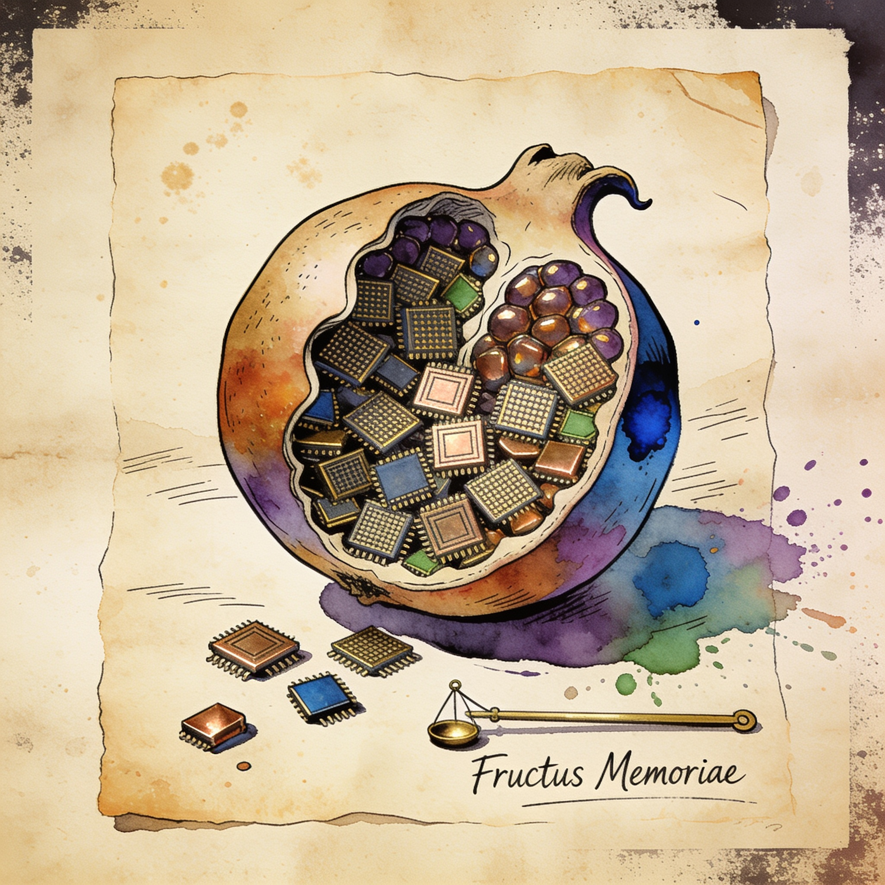

96GB RTX 5090
Modified RTX 5090 with 96GB of VRAM sells for under $4,000
Shenzhen resellers are shipping rebuilt RTX 5090 cards carrying 96GB of GDDR7 — three times the stock 32GB — for about $3,888, using leaked Nvidia firmware to address the expanded memory pool. At roughly 65% of a retail 5090's cost, it is a cheap path to far more VRAM than any stock Blackwell card for local inference.